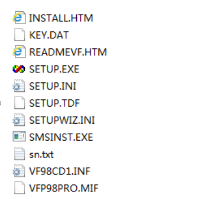

1.手持式红外线电子体温枪只要对着人的额头或手腕即可测出人的体温无需接触人体电子体温枪运用了传感技术。（ ）
手持式红外线电子体温枪利用红外线传感器来感知人体发出的红外线能量进而测量体温。这种无需接触人体就能获取体温数据的方式正是传感技术的典型应用。传感技术能够将非电物理量（如温度、红外线等）转换为电信号以便进行检测和处理所以该描述正确。
2.天气预报会随着时间的推移而发生变化这主要体现了信息的真伪性。（ ）
天气预报随时间推移发生变化主要体现的是信息的时效性。信息的时效性指信息仅在一定时间段内对决策具有价值。随着时间推移天气状况改变之前的天气预报信息价值降低需更新的预报来反映实时天气情况。而信息的真伪性侧重于信息本身是否真实可靠与信息随时间变化这一特征不符。
3.IP 地址的点分十进制表示方法中，把 IP 地址分四段来写，目的是便于计算机的识别和处理。（ ）
IP地址的点分十进制表示方法中把IP地址分四段来写主要目的是便于人们的记忆和使用。计算机处理IP地址是以二进制形式进行的而点分十进制这种直观的表示形式是为了方便用户理解和配置网络相关参数等操作并非便于计算机识别和处理。
4.在计算机内部视频文件是以一系列图像一张张存储的。（ ）
在计算机内部视频文件并非简单地以一系列图像一张张存储。虽然视频本质上由连续的图像帧组成但为了节省存储空间和便于传输视频文件会采用特定的编码格式（如H.264、MPEG-4等）进行压缩处理。这些编码方式利用了图像之间的时间冗余和空间冗余等特性对图像数据进行高效压缩后再存储而非直接一张张存储图像。
5.移动硬盘属于内部存储器。（ ）
移动硬盘不属于内部存储器，它是外部存储设备。内部存储器一般指计算机的内存，直接与CPU进行数据交互，速度快但断电后数据丢失。而移动硬盘用于长期存储大量数据，通过接口与计算机连接，不直接参与计算机内部数据处理，数据可长期保存。
6.通过文件“我们的歌.mpg”的后缀名可以判断该文件为音频文件。（ ）
“.mpg”是MPEG视频文件格式的后缀名，这类文件通常包含视频和音频数据，并非单纯的音频文件。所以通过“我们的歌.mpg”后缀名判断该文件为音频文件是错误的。
7.计算机中的所有数据都需转换成十进制码形式才能被计算机内部识别、处理。（ ）
计算机中的所有数据都需转换成二进制码形式才能被计算机内部识别、处理。因为计算机的硬件是基于二进制逻辑设计的，其电子元件只有两种状态，分别对应二进制的0和1 ，所以计算机只能直接处理二进制数据。
8.下图所示为某个软件的部分安装文件，双击 SETUP.INI 文件即可以开始安装该软件。（ ）

通常情况下，双击名为“SETUP.EXE”的可执行文件才可以开始安装软件。而“SETUP.INI”文件一般是配置文件，用于存储软件安装或运行时的一些参数设置等信息，不能直接通过双击它来启动软件安装。
9.要让计算机能够识别并处理我们眼中看到的风景，需要将 “风景” 进行数字化处理后转换成计算机能识别的二进制数。（ ）
计算机只能识别二进制数据，现实中的“风景”这类模拟信息，需经过数字化转换为二进制形式，计算机才能识别与处理。
10.有一种叫做 “黑色星期五” 的计算机病毒，计算机感染这种病毒后，每到星期五计算机的运行速度就会变得及其缓慢，这说明病毒具有可触发性。（ ）
计算机病毒的可触发性是指病毒在满足特定条件时才会发作，“黑色星期五”病毒以星期五作为触发条件，当满足此条件时，就会影响计算机运行速度，这体现了病毒的可触发性。
11.CPU是影响一台计算机性能的关键部件，通过查看CPU的详细信息就能快速地了解所使用计算机的全部性能。（ ）
虽然CPU是影响计算机性能的关键部件，但计算机性能还受内存容量、硬盘读写速度、显卡性能（尤其对于图形处理、游戏等场景）以及主板芯片组等多种硬件因素影响。仅查看CPU详细信息无法全面、快速了解计算机的全部性能。
12.应用软件是指控制和协调计算机及外部设备，负责管理计算机系统中各种独立的硬件，使得它们可以协调工作。如办公软件、图像处理软件、音视频播放软件。（ ）
控制和协调计算机及外部设备，管理计算机系统中各种独立硬件使其协调工作的是系统软件，而非应用软件。应用软件是为了满足用户在不同领域、不同问题上的应用需求而设计的软件。
13.当我们远游出门时，可以在家安装一个开门报警器，通过陀螺仪传感器感知家门被打开一个角度后，发出报警声，或发送短信以提醒门被打开。这主要使用了微电子技术的应用。（ ）
这种开门报警器感知门打开角度并实现报警或短信提醒功能，主要体现的是传感器技术与通信技术的应用。虽然微电子技术为其提供了一定的硬件基础，但从功能实现角度，核心并非微电子技术本身。
14.计算机上的应用软件可以根据需要自行安装和卸载，但是操作系统内置的某些应用软件通过常规方式无法卸载。（ ）
一般情况下自行安装的应用软件能按需卸载。然而操作系统内置的部分应用软件为保障系统稳定运行防止误删影响系统功能通过常规卸载方式确实无法卸载可能需借助特殊工具或特定操作才行。
15.在人类社会生活中，信息只存在于计算机中。（ ）
在人类社会生活中，信息无处不在，例如书籍、人与人的交流、各类自然现象等都承载着信息，计算机只是存储和处理信息的一种工具，并非信息唯一的存在之处。
16.通过手机上的某款烹饪类APP，我们可以学习别人的烹饪方法和技巧，也可以在上面分享自己的烹饪经验，这体现了信息的传递性和共享性。（ ）
人们借助烹饪类APP获取他人经验并分享自身经验，信息在不同个体间流动，充分展现了信息能够在主体间传递以及被共同享用的特性，即传递性与共享性。
17.使用网站域名访问网站失败时，可以尝试使用网站IP地址进行访问。（ ）
域名系统（DNS）负责将域名解析为IP地址。当通过域名访问失败有可能是DNS解析出现问题此时直接使用网站的IP地址访问绕过DNS解析过程就有可能成功访问网站。
18.在计算机接口中，U盘可以接入标识为 ）
双绞线接口一般用于网络连接如连接网线实现网络通信。U盘使用的是USB接口用于数据存储设备与计算机的数据传输两者接口类型不同U盘无法接入双绞线接口。
19.为提醒自己陈希将每月的重要事项都标注在日历上这主要体现了信息的载体依附性。（ ）
信息本身无形需借助一定载体呈现。陈希把重要事项标注在日历上日历成为承载重要事项信息的载体体现了信息的载体依附性。
20.计算机性能的完全由硬件决定与软件无关。（ ）
计算机性能并非完全取决于硬件软件同样起着重要作用。高效的操作系统和优化良好的应用程序能充分发挥硬件性能而低效率或有缺陷的软件可能限制硬件性能的发挥。
21.文件夹不仅可以进行新建移动删除等操作还可以进行重命名复制等操作。（ ）
在操作系统中对文件夹执行新建、移动、删除、重命名、复制等操作是常见的文件管理功能几乎所有主流操作系统都支持这些操作以方便用户管理文件资源。
22.多功能智能手表是微电子技术、通信技术、计算机技术和传感技术等多种技术相融合的产物。（ ）
多功能智能手表依靠微电子技术实现设备的微型化与集成化利用通信技术达成数据传输与联网通过计算机技术进行数据处理和系统运行借助传感技术收集各类身体和环境信息是多种技术融合的成果。
23.在编辑文档前需要将该文档复制一份保留可以按住Ctrl键用鼠标拖动该文档到其它位置来完成。（ ）
在常见操作系统如Windows和macOS中这种通过按住Ctrl键并拖动文件的操作是一种便捷的复制文件方式它能快速在同一存储介质内不同位置或不同存储介质间复制文档。
24.二维码是一种安全性很高的编码所以可以随意扫描二维码没有危险性。（ ）
虽然二维码在很多场景下安全但并非能随意扫描有些恶意二维码可能会引导用户访问恶意网站、下载含病毒软件或窃取个人信息扫描来历不明二维码存在安全风险。
25.计算机中的文字、音频、图像等信息，都要转化成二进制才可以直接被计算机使用。（ ）
计算机的底层硬件基于数字电路，只能识别和处理高、低两种电平状态，对应二进制的0和1。所以无论是文字、音频还是图像等各类信息，都需转换为二进制数据形式，计算机才能进行存储、处理和传输。
26.很多智能电视机都支持语音点播节目这主要应用了人工智能技术。（ ）
智能电视机的语音点播功能涉及语音识别技术将用户语音转化为文本再通过自然语言处理理解用户意图从而实现节目点播语音识别和自然语言处理都属于人工智能范畴。
27.随着信息技术的发展通过语音输入文字将会完全替代传统的文字输入方式。（ ）
尽管语音输入文字发展迅速但它不会完全替代传统文字输入方式。传统输入在准确性、保密性、特定场景适用性如嘈杂环境或需要安静的场合等方面仍有优势二者会长期共存相互补充。
28.计算机必须先安装操作系统软件才能使用而智能手机不需要安装操作系统就能直接使用。（ ）
无论是计算机还是智能手机操作系统都是必不可少的系统软件。计算机没操作系统硬件无法协调工作用户无法有效操作。同理智能手机若无操作系统就无法管理硬件资源、运行应用程序用户根本无法正常使用。所以该说法错误。
29.通过呼叫“小度，小度”来唤醒百度地图导航的智能语音功能可以方便的设置导航路线在前方线路拥堵时“小度”会搜索新的线路并推荐给用户。“小度”这些功能的实现主要利用了语音识别、智能搜索、个性化推荐等技术。（ ）
呼叫唤醒利用语音识别技术将语音转为指令智能搜索能依据实时路况寻找新线路个性化推荐则结合用户偏好和当前情境给出合适路线这些技术共同实现了“小度”功能。
30.在科技飞速发展的今天，骗子的手段层出不穷，利用智能换脸和拟声技术，佯装领导、亲人、好友打电话或者开启视频聊天，获取信任以后以各种理由借钱、过账。这主要说明了信息具有真伪性的特征。（ ）
骗子借助技术伪装来传递虚假信息，让接收者误以为是真实的信息，这充分体现了信息有真有假，即具有真伪性特征。
31.Android是一款系统软件。（ ）
Android是基于Linux内核开发的移动操作系统，操作系统属于系统软件，所以该表述正确。
32.智能手机只有安装了安卓系统才能正常使用。（ ）
除了安卓系统，像苹果的iOS系统也是智能手机常用的操作系统，安装iOS系统的苹果手机同样能正常使用，并非只有安卓系统这一种选择。
33.在计算机中，存储“公元2021年”这些内容需要占用7个字节。（ ）
在计算机中一个汉字一般占2个字节“公元”和“年”这3个汉字占用3×2=6字节。而数字在常见编码下每个数字占1字节“2021”4个数字占4字节。总共需要占用6+4=10字节并非7字节。
34.京东物流采用无人仓、无人车、无人机、外骨骼机器人、智能打包机等智能科技设备，能够高效应对海量订单，减少了人员的工作量，这体现了信息技术智能化的发展方向。（ ）
京东物流运用的无人仓、无人车等智能设备可自动执行任务处理物流工作体现信息技术智能化发展趋势。
35.IP地址的取值范围为0-255，因此一个局域网中的计算机最多不超过255台。（ ）
虽然IP地址的每个分段取值范围一般是0 - 255但局域网中计算机数量并非单纯由此决定通过子网掩码划分等技术可调整可用IP数量并非最多只能有255台。
36.在计算机中，视频文件一定比文本文件占用的存储空间大。（ ）
文件占用空间大小受内容量及编码等因素影响非仅由文件类型决定如极小片段且高度压缩的视频文件可能比长篇未压缩文本文件占空间小故不能说视频文件一定比文本文件占存储空间大。
37.多媒体技术进入到我们生活-使得我们在生活各个方面都得到了更加高效、便捷的服务。（ ）
多媒体技术融合多种信息形式-如在教育领域可通过丰富视听资料提升学习效率-在娱乐方面提供多样化体验-在生活各方面带来高效便捷服务。